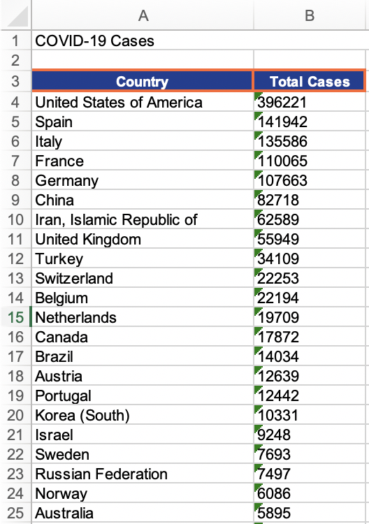

This library contains tools for building XML based documents of different formats.
Buildnode supports these formats:
Other examples are available on the GitHub.
To test this library, let's make a script which will fetch COVID-19 stats and produce the Excel spreadsheet.
First, we need a function whuch will fetch data. It uses "dexador" to make GET http request and "jonathan" to parse received JSON:
POFTHEDAY> (defun get-data ()
(loop with response = (dex:get "https://api.covid19api.com/summary")
with parsed = (jonathan:parse response)
for item in (getf parsed :|Countries|)
collect item into results
finally (return
(sort results
#'>
:key (lambda (item)
(getf item :|TotalConfirmed|))))))
POFTHEDAY> (get-data)
((:|Date| "2020-04-08T11:51:39Z" :|TotalRecovered| 21763 :|NewRecovered| 2182
:|TotalDeaths| 12721 :|NewDeaths| 1938 :|TotalConfirmed| 396221
:|NewConfirmed| 29614 :|Slug| "united-states" :|CountryCode| "US" :|Country|
"United States of America")
(:|Date| "2020-04-08T11:51:39Z" :|TotalRecovered| 43208 :|NewRecovered| 2771
:|TotalDeaths| 14045 :|NewDeaths| 704 :|TotalConfirmed| 141942
:|NewConfirmed| 5267 :|Slug| "spain" :|CountryCode| "ES" :|Country| "Spain")
(:|Date| "2020-04-08T11:51:39Z" :|TotalRecovered| 24392 :|NewRecovered| 1555
:|TotalDeaths| 17127 :|NewDeaths| 604 :|TotalConfirmed| 135586
:|NewConfirmed| 3039 :|Slug| "italy" :|CountryCode| "IT" :|Country| "Italy")
...)Now we can create the document:
POFTHEDAY> (excel:with-excel-workbook ()
(ss:worksheet '("ss:Name" "COVID-19")
(ss:table ()
;; The first raw will contain a title
(ss:row ()
(buildnode:set-attribute
(ss:string-cell "COVID-19 Cases")
"ss:MergeAcross" 2))
;; Next we'll skip one row and make
;; a table header on the third row:
(excel:set-index 3
(ss:row ()
(ss:header-cell "Country")
(ss:header-cell "Total Cases")))
;; Now it's time to add rows with data
(loop for item in (get-data)
collect
(ss:row ()
(ss:string-cell (getf item :|Country|))
(ss:string-cell (format nil "~A" (getf item :|TotalConfirmed|))))))))
POFTHEDAY> (buildnode:write-doc-to-file * "covid-19.xml")If we open resulting XML in the Excel, we can find all our data on the page:
